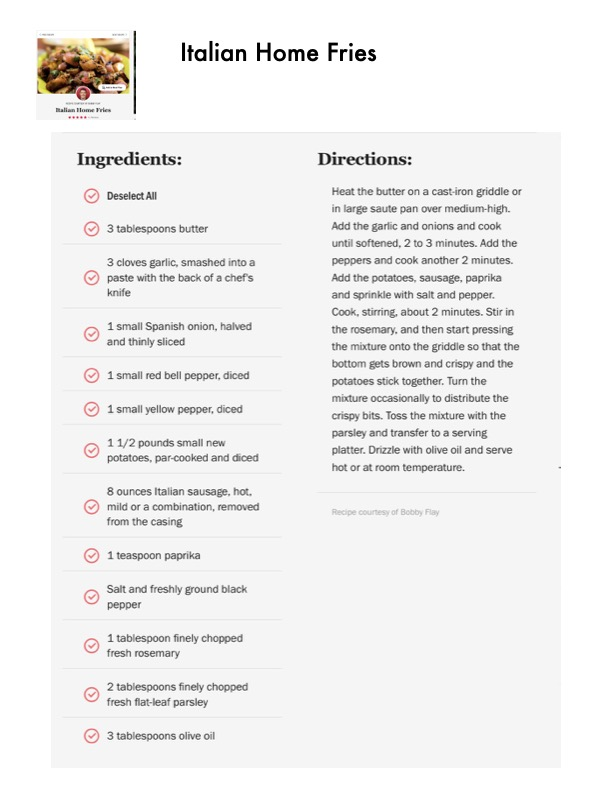

Italian Home Fries

Original cookbook page 282
Ingredients
- Oo O8 8 @
- Deselect All
- 3 tablespoons butter
- 3 cloves garlic, smashed into a
- paste with the back of a chef's
- knife
- 1 small Spanish onion, halved
- and thinly sliced
- 1 small red bell pepper, diced
- 1 small yellow pepper, diced
- 11/2 pounds small new
- potatoes, par-cooked and diced
- 8 ounces Italian sausage, hot,
- mild or a combination, removed
- from the casing
- 1 teaspoon paprika
- Salt and freshly ground black
- pepper
- 1 tablespoon finely chopped
- fresh rosemary
- 2 tablespoons finely chopped
- fresh flat-leaf parsley
- 3 tablespoons olive oil
- Italian Home Fries
Instructions
- 1 small Spanish onion, halved and thinly sliced
- 1 1/2 pounds small new potatoes, par-cooked and diced
- 8 ounces Italian sausage, hot, mild or a combination, removed from the casing
- 1 tablespoon finely chopped fresh rosemary
- 2 tablespoons finely chopped fresh flat-leaf parsley
- Heat the butter on a cast-iron griddle or in large saute pan over medium-high.
- Add the garlic and onions and cook until softened, 2 to 3 minutes.
- Add the peppers and cook another 2 minutes.
- Add the potatoes, sausage, paprika and sprinkle with salt and pepper.
- Cook, stirring, about 2 minutes.
- Stir in the rosemary, and then start pressing the mixture onto the griddle so that the bottom gets brown and crispy and the potatoes stick together.
- Turn the mixture occasionally to distribute the crispy bits.
- Toss the mixture with the parsley and transfer to a serving platter.
- Drizzle with olive oil and serve hot or at room temperature.
Recipe #282 from collection